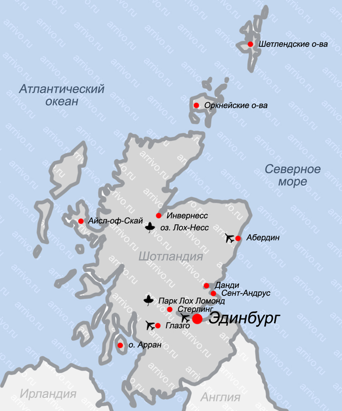

Шотландия - страна на севере острова Великобритания, которая является частью государства Соединённое Королевство Великобритании и Северной Ирландии. Граничит по суше с Англией и омывается морями Атлантического океана: Северным (на востоке) и Ирландским (на западе). Столицей Шотландии является Эдинбург, а крупнейшим городом - Глазго. Страна имеет потрясающую аутентичную атмосферу, богатые традиции и широкую автономию.
